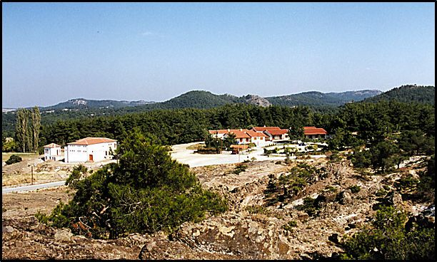
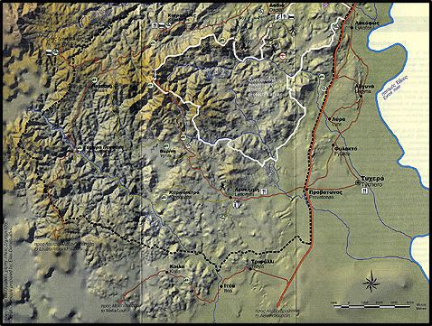
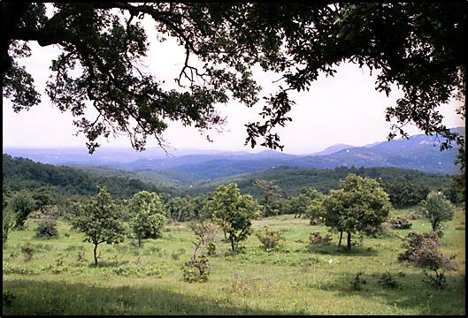
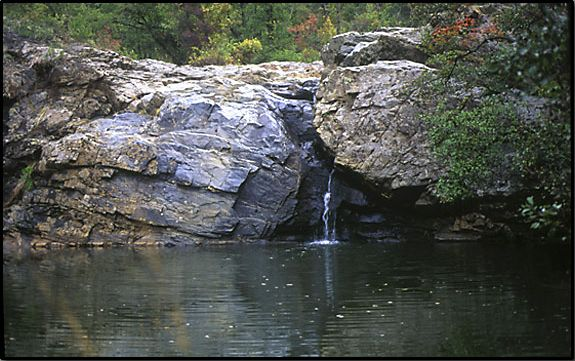
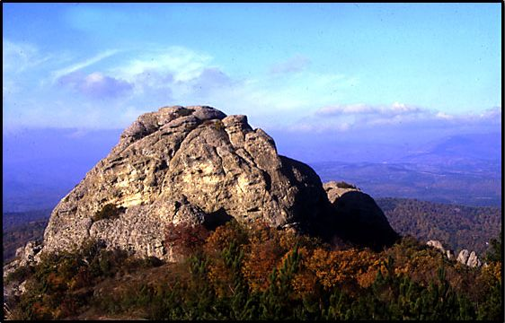
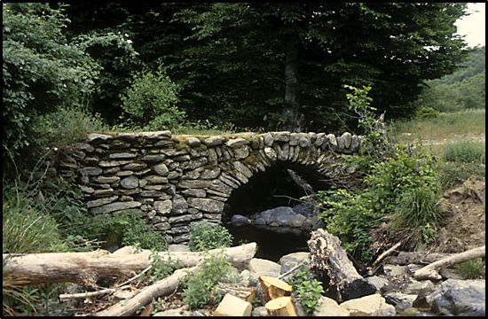

Η ιστορία της θεσμοθετημένης προστασίας του δάσους Δαδιάς, ξεκίνησε το 1980, με την υπογραφή διυπουργικής απόφασης (ΧΠ/ΓΧΠ 2659/80) και την ανακύρηξη δύο περιοχών σε ζώνες αυστηράς προστασίας έκτασης και μιας περιφερειακής ζώνης έκτασης. Το 1995 ολοκληρώθηκε από το WWF Ελλάς, η Ειδική Περιβαλλοντική Μελέτη για το δάσος Δαδιάς, που έθεσε τις βάσεις και τις κατευθύνσεις για την ολοκληρωμένη διαχείριση της περιοχής και προετοιμάστηκε σχέδιο προεδρικού διατάγματος για την ανακήρυξη της περιοχής ως Εθνικού Πάρκου, προτείνοντας και την μεταβολή της έκτασης της περιφερειακής ζώνης και την ταυτοποίηση τους, με τα όρια του δασικού συμπλέγματος Δαδιάς – Λευκίμης – Σουφλίου.

Η Προστατευόμενη Περιοχή δάσους Δαδιάς, βρίσκεται στο μέσον του νομού Έβρου και αποτελεί τμήμα της νοτιο-ανατολικής απόληξης του ορεινού όγκου της Ροδόπης. Εντάσσεται στην πεδινή - ημιορεινή ζώνη με υψόμετρο που κυμαίνεται από 10 μέχρι 604 μ. Δυτικά της περιοχής βρίσκεται μια ορεινή ζώνη με ψηλότερες κορυφές τη Σάπκα (1044 μ.) και το Σίλο (1065 μ.).
Το δάσος της Δαδιάς, χαρακτηρίζεται από μια έντονη εναλλαγή του τοπογραφικού αναγλύφου, που συνθέτουν η ύπαρξη λόφων και χαμηλών βουνών, οι μικρές κλειστές και ανοικτές κοιλάδες, ο μεγάλος αριθμός μικρών και μεγάλων ρεμάτων και η ποικιλομορφία των εκθέσεων και κλίσεων του εδάφους. Το σύνθετο ανάγλυφο της περιοχής, η έντονη εναλλαγή της μορφής, δομής και σύνθεσης της δασικής βλάστησης, η παρουσία βραχωδών σχηματισμών, μικρών ή μεγάλων διακένων, φυσικών υδάτινων σχηματισμών, φυτοφρακτών και χωραφιών με παραδοσιακές καλλιέργειες, αποτελούν τα βασικά στοιχεία σύνθεσης του τοπίου της περιοχής.

Το σύνολο του δάσους ανήκει στο δημόσιο. Στο δάσος επιτρέπεται η βόσκηση κτηνοτροφικών ζώων και η διέλευση για τους κατοίκους των τριγύρω κοινοτήτων. Οι περισσότεροι αγροί κατέχονται κληρονομικά χωρίς να υπάρχουν στοιχεία κτηματολογίου.
Το 1980 με Κοινή Υπουργική Απόφαση των Υπουργείων Γεωργίας και Συντονισμού, ανακυρήχθηκε η Προστατευόμενη Περιοχή Δαδιάς και ορίστηκε περιοχή αυστηράς προστασίας έκτασης 72.580 στρ. και περιφερειακή ζώνη.



